1. CORBA简介
CORBA（Common Object Request Broker Architecture），公用对象请求代管者体系结构，它是为了实现分布式计算而引入的。为了说明CORBA在分布计算上有何特点，我们从它与其它几种分布计算技术的比较中进行说明。
与过去的面向过程的RPC（Remote Procedure Call）不同，CORBA是基于面向对象技术的，它能解决远程对象之间的互操作问题。
MicroSoft的DCOM（Distributed Component Object Model）也是解决这一问题的，但它基于Windows操作系统，虽然DCOM已有在其他操作系统如Sun Solaris，Digital Unix，IBM MVS上的实现，但毫无疑问，只有在微软的操作系统上才会实现得更好。而只有CORBA是真正跨平台的，平台独立性正是CORBA的初衷之一。
另一种做到平台无关性的技术是Java RMI（Remote Method Invocation），但它只能用JAVA实现。CORBA与此不同，它通过一种叫IDL（Interface Definition Language）的接口定义语言，能做到语言无关，也就是说，任何语言都能制作CORBA组件，而CORBA组件能在任何语言下使用。
因此，可以这样理解CORBA：**CORBA一种异构平台下的语言无关的对象互操作模型**。
2. CORBA的基本概念
2.1. ORB（Object Request Broker）对象请求代理
CORBA体系结构的核心就是ORB。
下图为ORB的基本模型，它作为一个”软件总线”来连接网络上的不同对象，提供对象的定位和方法调用，可以这样简单理解：**ORB就是使得客户应用程序能调用远端对象方法的一种机制**。
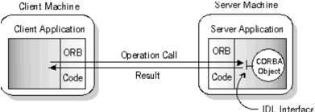
具体来说就是：当客户程序要调用远程对象上的方法时，首先要得到这个远程对象的引用，之后就可以像调用本地方法一样调用远程对象的方法。当发出一个调用时，实际上ORB会截取这个调用（通过客户Stub完成），因为客户和服务器可能在不同的网络、不同的操作系统上甚至用不同的语言实现，ORB还要负责将调用的名字、参数等编码成标准的方式（称为Marshaling）通过网络传输到服务器方（实际上在同一台机器上也如此），并将参数通过Unmarshaling的过程传到正确的对象上（这个过程叫重定向，Redirecting），服务器对象完成处理后，ORB通过同样的Marshaling/Unmarshaling方式将结果返回给客户。
因此，ORB是一种功能，它具备以下能力：
- 对象定位（根据对象引用定位对象的实现）
- 对象定位后，确信Server能接受请求
- 将客户方请求通过Marshaling/Unmarshing方式重定向到服务器对象上
- 如果需要，将结果以同样的方式返回
Marshaling一个对象的过程就是一个序列化（deflating）的过程，相应的Unmarshaling就可以看作是反序列化（inflating）的过程。
2.2. IDL（Interface Definition Language）接口定义语言
如果说**ORB使CORBA做到平台无关，那么IDL则使CORBA做到语言无关**。
正像其名字中显示的那样，**IDL仅仅定义接口，而不定义实现**，类似于C中的头文件。实际上它不是真正的编程语言。要用它编写应用，需要将它映射它相应的程序设计语言上去，如映射到C++或JAVA上去。映射后的代码叫Client Stub Code和Server Skeleton Code。
IDL的好处是使高层设计人员不必考虑实现细节而只需关心功能描述。IDL可以说是描述性语言。设计IDL的过程也是设计对象模型的过程。它是编写CORBA应用的第一步，在整个软件设计过程中至关重要。
IDL的语法很像C++，当然也像Java。很难想像一个程序设计人员是不懂C或Java的，所以，几乎所有的程序设计人员都能迅速理解IDL。而这正是IDL设计者所希望的。
2.3. OA（Object Adapter）对象适配器
OA用于构造对象实现与ORB之间的接口。它给框架发送方法，调用并且支持服务器对象的生命周期，完成对象引用的生成、维护，对象定位等功能。对象适配器有各种各样的，常用的有两种：
- BOA（Basic Object Adapter）基本对象适配器：负责激活对象，即当客户请求对象的服务时，激活对象实现的能力。
- POA（Portable Object Adapter）可移植对象适配器：是BOA的替代方式，提供大量可扩展的接口，来处理一些对于BOA来说不合理的要求。
2.4. GIOP（General Inter-ORB Protocol）通用ORB协议
我们知道，客户和服务器是通过ORB交互的，那么，客户方的ORB和服务器方的ORB又是通过什么方式通信呢？通过GIOP(General Inter-ORB Protocol)。也就是说，**GIOP是一种通信协议，它规定了客户和服务器的ORBs间的通信机制**。
GIOP设计的尽可能简单，开销最小，同时又具有最广泛的适应性和可扩展性，以适应不同的网络。它定义了以下两个方面：
- The Common Data Representation (CDR) definition.（通用数据表示定义）：它实际上是IDL数据类型在网上传输时的编码方案。它对所有IDL数据类型的映射都作了规定。
- GIOP Message Formats（GIPO消息格式）：它规定了Client和Server两个角色之间要传输的消息格式。主要包括Request和Reply两种消息。
GIOP因为是一种通用协议，所以不能直接使用。在不同的网络上需要有不同的实现。目前使用最广的便是Internet上的GIOP，称为IIOP（Internet Inter-ORB Protocol），IIOP把GIOP消息数据映射为TCP/IP连接行为和输入/输出流读/写。
IIOP不是完全从GIOP分离出来的协议，它更像是GIOP的一个实例。
2.5. 其他常见概念
- DII（Dynamic Invocation Interface）动态调用接口：位于客户端，发送客户端的调用请求。
- DSI（Dynamic Skeleton Interface）动态框架接口，位于服务器端，传送客户端的调用请求。
- SII（Static Invocation Interface）静态调用接口：位于客户端，客户与ORB之间的静态接口。
- SSI（Static Skeleton Interface）静态框架接口：位于服务器端，ORB与服务器之间的静态接口。
- stub存根：位于客户端，由IDL编译器编译IDL文件生成，其功能类似一个客户代理。
- skeleton框架：位于服务器端，由IDL编译器编译IDL文件生成，其功能是负责发送一个操作调用给能实现此操作的服务。
- IR（Interface Repository）接口存储库：存储运行时所需要的IDL规范。
- IMR（Implementation Repository）实现存储库：存储对象实现（一个服务器）的详细信息（即一个执行程序需要被放置在哪一个服务器上）。
- IOR（Interoperable Object Reference）可操作对象引用：它包括所有客户与服务器联系所需的各种信息（包括CORBA服务器对象进程的IP地址和TCP端口等），ORB将通过它产生在网络上唯一标识那个将被分布对象的消息。
- ORBAservices（CORBA服务）：在ORB级别之上，定义了大多数分布式企业对象利用的公共服务，如命名服务、交易对象服务、关系服务、生命周期服务、外表化服务、持久性服务、查询服务、对象集合服务、属性服务、事件服务、许可证服务、时间服务、事务服务、并发控制服务和安全服务等。
- CORBAfacilities（CORBA工厂）：位于CORBAservices之上，定义了更高层次的分步式服务与框架。如：打印、电子邮件、文档管理等。
3. CORBA的体系结构
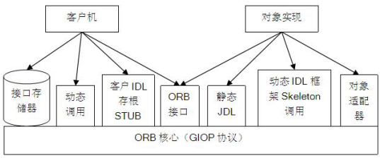
上图为CORBA的体系结构图，它描述了以下内容：
- CORBA规范中定义了IDL语言及其向其他高级语言的映射。类似于COM中的IDL语言，OMG的IDL语言通过说明对象的接口来定义对象，它也是一种描述性语言。一个接口同样包括一组命名的操作和相应于这些接口的参数。
- ORB核心提供了客户与对象间实现透明通信的方法，它可以屏蔽对象实现位置、实现方式、状态和通信机制等细节以及不同实现间可能存在的差异。
- 对象适配器位于ORB核心和对象实现之间，它负责服务对象的注册、对象引用的创建和解释、对象实现的服务进程的激活和去活、对象实现的激活和去活以及客户请求的分发。
- IDL存根为客户提供了静态调用方式，IDL构架为客户提供了静态实现方式。IDL编译器编译描述服务对象接口的IDL文件，生成对应于具体编程语言的IDL存根和IDL构架程序。IDL存根负责把用户的请求进行编码，发送到对象实现端，并对接收到的处理结果进行解释，把结果或异常信息返回给用户；IDL构架对用户请求进行解码，定位所请求的对象的方法，执行该方法，并把执行结果或异常信息编码后发送给客户。
- 动态调用接口DII（Dynamic Invocation Interface）和动态构架接口DSI（Dynamic Skeleton Interface）提供了动态调用方法和动态实现方法。某些情况下客户预先不知道服务对象的接口信息，需要通过查询或者采用其他的手段获得服务对象的接口描述信息，然后使用DII动态调用ORB核心接口的方法来构造客户请求并发送到对象实现。在对象实现方可以使用DSI动态分发用户请求的机制，以便动态的处理客户方的请求。客户和对象实现所采用的方式并不一定要对应，也就是说，客户方支持的静态和动态两种调用方式，对象实现方支持的静态和动态两种实现方式，经过组合后得到的4种方式都可能出现。例如，客户方可能使用静态调用方式，而对象实现方使用动态构架接口，反之亦然。
- 在动态方式下，需要查询相应的服务对象的接口描述信息（在静态方式下，这些信息由IDL文件来描述），这些信息由接口库提供。接口库通常以IDL描述文件为其输入，将接口描述信息进行处理后存放在文件、数据库或者其他形式的存储机制中，并提供一组标准的调用接口供客户查询使用。服务对象的描述信息也由接口库提供。
4. CORBA的应用程序结构
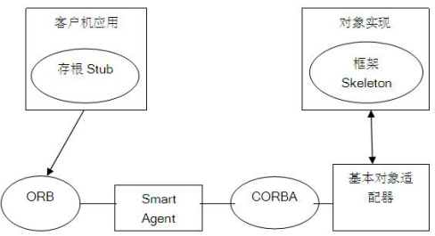
上图为CORBA的应用程序结构，它显示了CORBA应用程序各部件间的调用关系，ORB在CORBA客户和服务器之间传递方法调用和相关信息。
在CORBA应用系统中主要分为两部分：一是位于应用程序服务器中的CORBA对象，另一个是应用使用的客户程序。这些客户程序通过CORBA技术使用CORBA对象提供的服务来完成其工作。**CORBA规范定义了客户程序与服务程序中的对象如何进行通信的机制**。
对象请求代理（ORB）负责处理它们之间的通信。ORB提供了支持分布式处理的机制：为请求查找具体的对象实现，让对象实现作好接收请求的准备，传送构成请求的数据等。客户所看到的接口完全独立于对象所在的物理位置，实现对象的编程语言，以及在对象的接口中没有反映出来的其他特性。ORB通过IDL程序框架或动态程序框架来定位相应的实现代码、传送参数，以及对对象实现的传送控制。
处理通信的对象分别称为存根和构架。客户端为存根（Stub），服务器端为构架（Skeleton）。在客户端，存根对象担当CORBA对象的代理，当客户程序调用CORBA对象的方法时，存根把调用传递给ORB，ORB使用Smart Agent程序定位CORBA服务器。在CORBA服务器上，ORB应用程序把调用传递给构架，构架ORB的通信需要经过BOA（Basic Object Adaptor ，基本对象适配器），CORBA服务器运行指定的过程，然后由相反的路径返回结果。
Smart Agent用来定位CORBA服务器。启动程序时，自动访问Smart Agent。如果要支持CORBA，应该在局域网的某台机器上运行Smart Agent，当然也可以启动多个Smart Agent，以提高系统的可靠性。当客户机或服务器启动时，它们通过广播消息寻找Smart Agent，因此无需事先知道Smart Agent的位置。ORB实际上是一组放在动态库orb-r.dll中的函数，用户很少直接调用该DLL中的函数，系统在必要的时候调用他们。当服务器启动时，ORB向Smart Agent注册CORBA服务器。
5. Java IDL简介
5.1. 认识IDL
module helloidl{
interface Hello{
string sayHello();
};
};上述的代码就是一个简单的IDL。在IDL中，接口定义以分号结尾。
IDL只能用来表示接口而无法用来编程。IDL描述的CORBA对象必须要被实现，例如用C++或Java来实现。
将IDL翻译为Java编程语言的规则统称为Java编程语言的绑定（Java programming language binding）。语言绑定由OMG负责标准化，所有的CORBA提供商都必须使用相同的规则，将IDL的产品映射到特定的编程语言。
5.2. IDL中的几个重要概念
5.2.1. 异常
异常包含如下环节：
- （1）定义异常处理；
- （2）引发异常；
- （3）捕捉异常，异常处理。
其中环节（1）应该在OMG IDL中进行，（2）（3）环节应该在客户端对象实现中进行。
定义异常用exception关键字，抛出异常用raises关键字。下面是简单的IDL异常代码：
interface Warehose{
exception BadCustomer {string reason;}; //自定义异常
ProductSeq find(in Customer c) raises BadCustomer; //抛出异常
};IDL编译器会将异常类型翻译为一个类。
5.2.2. 继承
用OMG IDL可定义继承、多重继承以及跨模块继承。使用冒号“:”表示继承。下面是简单的IDL继承代码：
interface Book{
attribute string isbn;
};
interface Book:Product{};5.2.3. 变量、常量与属性
在CORBA接口中不能使用变量。但可以包含常量，如：
const int NUMBER = 404;接口还可以包含属性。属性看起来就像实例变量，但它们其实是一对访问器（accessor）与改写器（mutator）方法的简化。相当于Java中的setXXX、getXXX。但如果属性声明为readonly，就不生成改写器方法。
5.2.4. in、out和inout参数的使用
定义一个方法时，对于参数传递，除了Java编程语言提供的选择之外，还有其他选择。每个参数都可以声明为in、out或者inout。
一个in参数仅仅是传递给方法，与Java中的参数传递机制相同。但是Java中没有与out参数类似的东西。方法在返回前，会在每一个out参数中保存一个值，而方法调用者可以取得保存在out参数中的值。
如果参数只是声明为out，那么方法就不应该指望该参数被初始化。如果参数声明为inout，那么调用者需要为方法提供参数的初始值，然后，该方法可以修改这个值，而调用者能够获取修改后的值。
在Java中，这些参数可由特殊的持有者类（holder class）来模拟，持有者类由Java IDL编译器生成。IDL编译器为每个接口生成一个后缀为Holder的类。每个持有者类都有一个被称为value的公共实例变量。
Holder结尾的类主要用于out类型的参数传递，其中通过xxxHolder.value值能得到返回的值。示例IDL代码如下所示：
Product p; //接口
ProductHolder pHolder = new ProductHolder();
w.locate(descr, pHolder); //pHolder为out类型的参数，调用locate方法后，会将pHolder对象中的value属性赋值。
p = pHolder.value; //取得返回后的值IDL不支持方法重载，因此必须为每个方法采用不同的名称。对于一些基础类型，已经预定义了它们的持有者，如IntHolder、DoubleHolder等。
5.3. IDL元素与Java元素的映射关系

上图为IDL中的元素以及与Java中元素的映射关系。
OMG IDL中的基本数据类型包括：Long、Short、unsigned long、unsigned short、float、double、char、boolean、Octet、any（其中any可以用来和任何一种数据类型匹配，包括构造数据类型以及数组）。
构造数据类型包括：struct、union、enum、sequence、String。
在IDL中，可以用sequence定义大小可变的数组（相当于Java中的数组）。如果希望限定一维序列的上限，可采用sequence<数据类型，上限>的方式来定义，还可以嵌套定义如sequence<sequence<数据类型>>在声明sequence的参数或返回值之前，必须先定义一个类型。例如，下面定义了一个”产品序列”的类型：
typedef sequence<Product> ProductSeq;然后就可以在方法声明中使用该类型了：
interface Warehouse{
ProductSeq find(in Customer c);
};6. CORBA接口开发入门
6.1. Borland VisiBroker Edition简介
Borland VisiBroker是市场上最流行的CORBA环境之一，目前最新版是6.5。它支持C＋＋和JAVA语言来开发CORBA应用程序，提供跨网络、跨硬件的应用和服务的交互功能。
并且由于它可以轻松地与包括CORBA2.6在内的所有ORB版本互操作，使得用Java编写CORBA应用时，不必学习IDL和其他CORBA特性，减少了开发者的学习负担；可以把已有的RMI应用移植到CORBA运行环境上，有效地利用了已有的开发资源。
6.2. 开发环境的安装
6.2.1. 安装JDK
由于Borland VisiBroker 6.5只支持JDK1.3.1或JDK1.4.1，更高的JDK版本不能够运行VisiBroker。
以下以JDK1.3.1_15为例，安装目录为C:\Program Files\Java\jdk1.3.1_15。在“我的电脑 – 属性 – 高级 – 环境变量 – 系统变量”中设置以下三个变量值（若没有则创建）：
JAVA_HOME：C:\Program Files\Java\jdk1.3.1_15
Path：%JAVA_HOME%\bin;%JAVA_HOME%\jre\bin
CLASSPATH：.;%JAVA_HOME%\lib;%JAVA_HOME%\lib\tools.jar若本已安装并配置好高版本的JDK，可以再安装JDK1.3.1或JDK1.4.1，然后把环境变量JAVA_HOME的值修改为JDK1.3或1.4的目录即可。
如下图所示，在DOS下执行命令“java -version”可查看当前JDK版本：
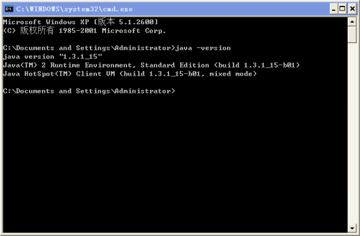
6.2.2. 安装Borland VisiBroker Edition
下载 Borland.Enterprise.Server.v6.5.AppServer.Edition-ZWTiSO.zip，解压得到 zkbsea65.bin，用虚拟光驱（假设盘符为G）打开该文件，以下为安装过程：
- （1）执行G:\Windows\installer.exe；
- （2）选择BES VisiBroker Edition；
- （3）安装目录选择D:\software\work\VisiBroker；
- （4）一直点击“下一步”直到出现“安装”按钮，点击开始安装；
- （5）安装完成后会弹出一个界面要求注册License，点击“Cancle”按钮取消，安装成功；
- （6）运行cmd，执行G:\crack>java -jar LicenseMaker_For_BES65.jar，然后选择D:\software\work\VisiBroker\var文件夹，点击确定后注册License成功；
- （7）备份D:\software\work\VisiBroker\var目录下的borland.lic文件（因为重启电脑可能会重写borland.lic，导致出现“Borland Enterprise Server License error”错误，无法执行start vbj Server）。
- （8）检查和设置windows的系统环境变量（可选，在DOS下执行或直接写入“我的电脑 – 属性 – 高级 – 环境变量 – 系统变量”中）：
set VBROKERDIR=D:\software\work\VisiBroker
set VBROKER_ADM=%VBROKERDIR%\adm
set BES_LIC_DIR=%VBROKERDIR%\var
set BES_LIC_DEFAULT_DIR=%VBROKERDIR%\license
set OSAGENT_PORT=14000
set Path=%VBROKERDIR%\bin6.2.3. 开发环境测试
可利用VisiBroker为用户提供的一些例子进行测试环境，测试步骤如下：
- （1）“开始 – 运行 – cmd”，进入DOS系统，然后使用cd命令进入目录D:\software\work\VisiBroker\examples\vbe\basic\bank_agent，执行vbmake.bat；
- （2）执行osagent命令，运行智能代理服务，右下角会出现Smart Agent的运行图标；
- （3）执行start vbj Server，运行CORBA服务器程序，若执行成功则会出现如图 2-8所示的DOS框；
- （4）执行vbj Client duyh，运行CORBA客户端程序，若执行成功则会出现如图 2-9所示的DOS框；
- （5）测试完成。
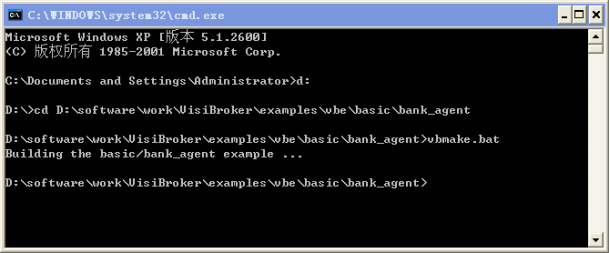
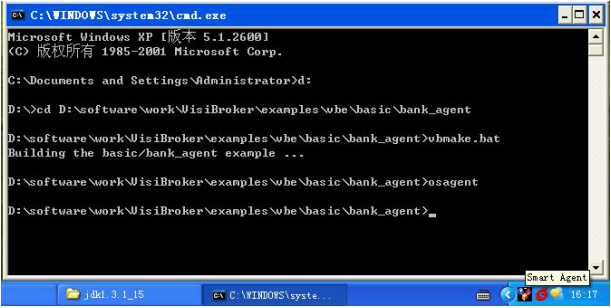
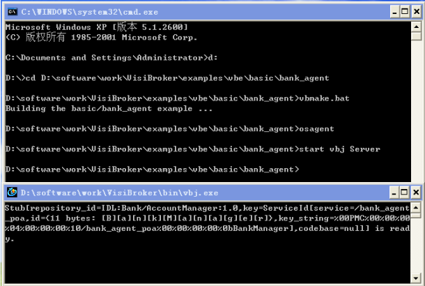
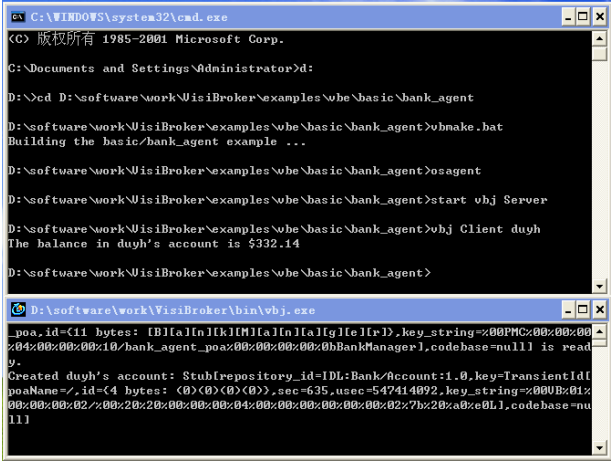
6.3. CORBA版Hello World应用开发实例
6.3.1. 应用需求
客户端通过CORBA接口调用的方式，请求执行服务端中对象的方法，服务器返回相应的字串符给客户端。
6.3.2. 定义IDL
根据需求只定义一个接口和相应该的返回字串的方法，hello.idl文件的内容如下：
//hello.idl
module helloidl{
interface Hello{
string sayHello();
};
};把hello.idl文件保存到D:\corba_test目录下。
6.3.3. IDL的编译与解释
“开始 – 运行 – cmd”，进入DOS系统，然后使用cd命令进入目录D:\corba_test，执行命令“idl2java hello.idl”对hello.idl文件进行编译，编译成功后会在D:\corba_test目录出现一个文件夹hello.idl，并且其中有7个java文件。
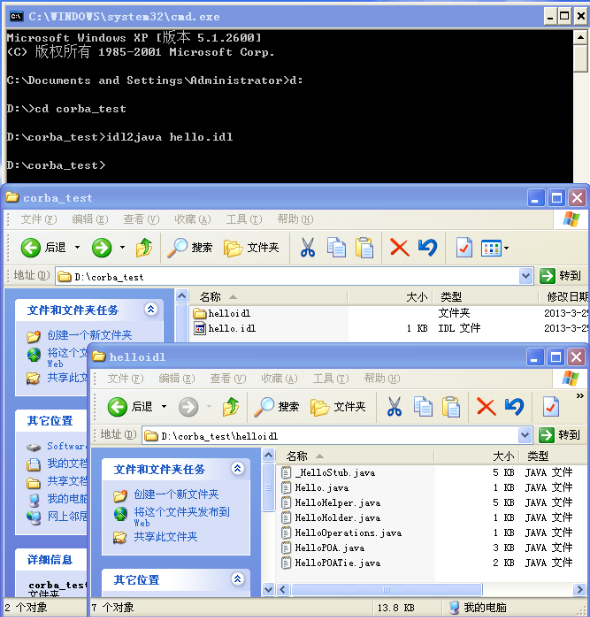
对生成的各个文件说明如下：
- _HelloStub.java：客户Hello对象的存根代码。
- Hello.java：Hello接口声明。
- HelloHelper.java：声明HelloHelper类，定义有用的实用工具方法。
- HelloHolder.java：声明HelloHolder类，这为传递Hello对象提供容器。
- HelloOperation.java：本接口说明hello.idl文件中的Hello接口中所定义的方法签名。
- HelloPOA.java：服务器端Hello对象实央的POA服务参象代码。
- HelloPOATie.java：通过使用tie机制，在服务器端用以实现Hello对象的类。
6.3.4. 编写Server端的接口实现代码
6.3.4.1. HelloImpl.java
引入了POA概念后，Server方的实现对象称为Servant，编写实现代码实际上就是对IDL定义的每个interface，都编写一个Servant，其中要实现interface中定义的每个方法。.
这里我们将Servant类定义为HelloImpl.java，代码如下：
//HelloImpl.java
import helloidl.*;
public class HelloImpl extends HelloPOA {
public String sayHello() {
return "\nHello world !!\n";
}
}6.3.4.2. HelloServer.java
Servant仅是实现代码，而Server是包含main()函数的可执行的代码。Server的主要任务就是创建所需的Servant，同时通知POA已准备就绪，可以接受客户方的请求。
新建一个文件HelloServer.java，代码如下：
//HelloServer.java
import org.omg.CORBA.*;
import org.omg.PortableServer.*;
public class HelloServer {
public static void main(String args[]) {
try {
// 初始化ORB
ORB orb = ORB.init(args, null);
// 取得根POA的引用
POA rootPOA = POAHelper.narrow(orb
.resolve_initial_references("RootPOA"));
// 持久的POA创建策略
org.omg.CORBA.Policy[] policies = { rootPOA.create_lifespan_policy(LifespanPolicyValue.PERSISTENT) };
// 使用正确的策略创建myPOA
POA myPOA = rootPOA.create_POA("hello_world_poa", rootPOA
.the_POAManager(), policies);
// 创建服务对象
HelloImpl managerServant = new HelloImpl();
orb.object_to_string(null);
// 确定服务对ID
byte[] managerId = "HelloManager".getBytes();
// 用myPOA上的ID激活服务对象
myPOA.activate_object_with_id(managerId, managerServant);
// 激活POA管理器
rootPOA.the_POAManager().activate();
System.out.println(myPOA.servant_to_reference(managerServant) + " is ready.");
// 等待进入的请求
orb.run();
} catch (Exception e) {
System.err.println("ERROR: " + e);
e.printStackTrace(System.out);
}
}
}6.3.5. 编写Client端的接口实现代码
6.3.5.1. HelloClient
Client程序就是客户方的可执行程序，它需要使用到Server方的服务。
新建一个文件HelloClient.java，代码如下：
//HelloClient.java
import helloidl.*;
import org.omg.CORBA.*;
public class HelloClient {
static Hello helloImpl;
public static void main(String args[]) {
try {
// 初始化ORB
ORB orb = ORB.init(args, null);
// 得到一个管理器ID
byte[] managerId = "HelloManager".getBytes();
// 找到一个对象管理器。给出POA全各及服务对象ID。
helloidl.Hello manager = helloidl.HelloHelper.bind(orb, "/hello_world_poa", managerId);
// 输出结果
System.out.println(manager.sayHello());
} catch (Exception e) {
System.out.println("ERROR : " + e);
e.printStackTrace(System.out);
}
}
}6.3.6. 程序的编译和运行
编译客户端和服务端程序并运行，步骤如下：
- （1）把3个java文件HelloImpl.java、HelloServer.java和HelloClient放到目录D:\corba_test下；
- （2）“开始 – 运行 – cmd”，进入DOS系统，然后使用cd命令进入目录D:\corba_test，然后执行命令“vbjc HelloClient.java”编译客户端代码，执行命令“vbjc HelloServer.java”编译服务端代码；
- （3）执行osagent命令，运行智能代理服务；
- （4）执行start vbj HelloServer，运行CORBA服务器程序；
- （5）执行vbj HelloClient，运行CORBA客户端程序，结果输出“Hello World!!”。
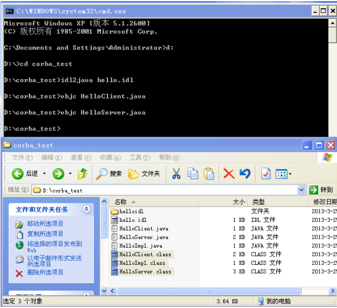
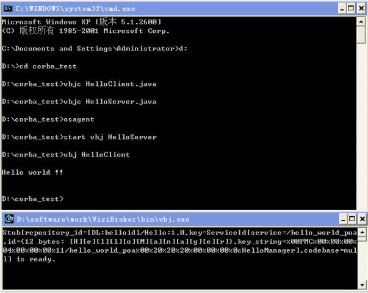
7. CORBA常用的四种服务简介
7.1. 名字服务
名字服务允许将一个或多个逻辑名与一个对象引用联结起来，并将名称存储在一个命名空间（namespace）中，也允许客户应用使用命名服务，以通过使用分配给对象的逻辑名称来取得该对象的引用。
相对于智能代理使用的平面型命名空间，命名服务则使用层次型的命名空间，结构类似于java中的包中的结构，如（com.xyz.corba）。
使用VisiBroker的命名服务中，对象实现使用NamingContext对象以将名称限制到它们所提供的对象。客户应用使用NamingContext来解析限制到对象引用的名称。
NamingContext通过rosolve方法取得逻辑Name中的对象引用，因为一个Name可以包含一个或多个NameComponent对象，所以解析能在NameComponent结构中来回移动，只要取其中的一个节点的对象引用，即可获得整个NameComponent结构的所有对象引用。
字串化的名称用于对应字串和CosNaming::Name，用“/”来分隔名称组件；用“.”来分隔id和kind属性；用“\”来作转义字符。如：
com/xyz/corba
...
// 名称字串化"com/xyz/corba"的代码
NameComponent[] continentName = { new NameComponent("com", "") };
NamingContext continentContext = rootNamingContext.bind_new_context(continentName);
NameComponent[] departmentName = { new NameComponent("xyz", "") };
NamingContext departmentContext = continentContext.bind_new_context(departmentName);
NameComponent[] objectName = { new NameComponent("corba", "") };
departmentContext.rebind(objectName,myPOA.servant_to_reference(managerServant));
...7.2. 事件服务
核心ORB支持的通信模型是实现客户端与服务器的一对一同步通信，通知服务则可支持更丰富的需求，包括：
- 支持分布/预订应用程序，如多对多
- 支持单向、异步和缓冲事件分布，其吞吐量远大于同步通信
- 对持服务质量，如事件/连接可靠性
- 支持事件筛选
TCP/IP用于实现接收者、提供者和事件通道之间的通信。分为“拉”和“推”的两种通信模型。事件通道使提供者和接收者不需确定对方的通信模型。
推式模型更为普遍。推型接收者将大多时间花费在事件的回路中，等待从ProxyPushSupplier而来的数据。
拉式模型是事件通道定期从提供者拉出数据，拉型提供者将大多时间花费在网络事件回路中，等待接收从ProxyPullConsumer发出的数据请求。
7.3. 通知服务
通知服务的实现模式跟事件服务类似。
7.4. 交易服务
“一手交钱，一手交货”是交易的基本原则，它的等价命题是既不能提了货却不给钱，又不能给了钱却没提货，在现实生活中，有许多对象之间的操作存在这种类似关系：要么这些操作全都进行，要么这些操作全都不进行，这种关系的操作就构成了事务（Transaction）。